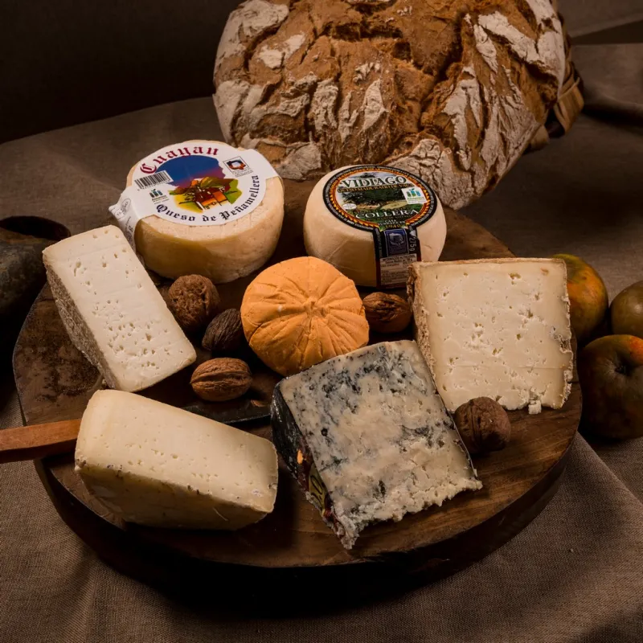
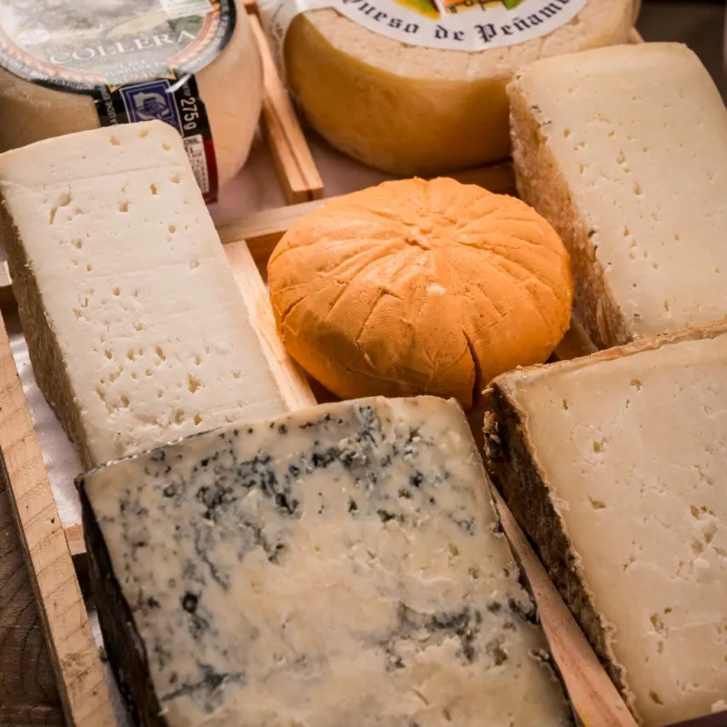
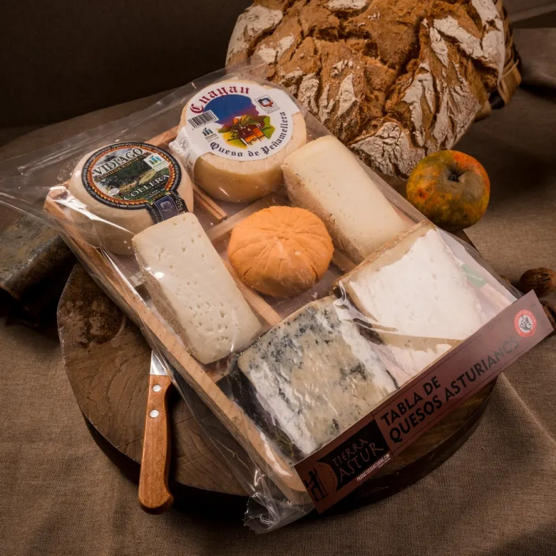
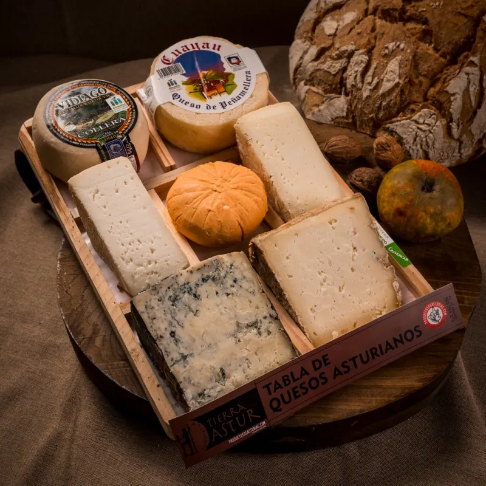

Tabla de 7 variedades de quesos asturianos
Disfruta de una selección artesanal de siete quesos asturianos premium. Desde el intenso Cabrales hasta el suave Vidiago, esta tabla ofrece un viaje gastronómico inigualable por el corazón de Asturias. Calidad gourmet garantizada. Ideal para regalar.
45,60 €
Descripción y características
Esta exclusiva tabla de siete variedades de quesos asturianos representa la cumbre de la tradición láctea del norte de España. Cada pieza ha sido seleccionada cuidadosamente para ofrecer un recorrido sensorial único a través de los diversos paisajes de Asturias. La tabla incluye el icónico Cabrales, conocido por su potente sabor y vetas azules; el suave y cremoso Gamonéu, con su característico toque ahumado; y el tradicional Afuega'l Pitu en sus versiones blanca y roja, aportando texturas granulosas y matices ácidos.
La tabla se compone de:
Cuña de Queso DOP Cabrales (220 gramos)
Queso de vaca Vidiago (300 gramos)
Queso Ahumadode vaca Tierra Astur (420 gramos)
Queso Afuega'l Pitu DOP (200 gramos)
Cuña de Queso Puro Cabra Tierra Astur (175 gramos)
Cuña de QuesoPuro Oveja Tierra Astur (175 gramos)
Cuña de Queso DOP Gamonéu (220 gramos)
INGREDIENTES:
CABRALES: Leche curda de vaca (92%), cabra (4%) y oveja (4%), cuajo y sal.
VIDIAGO: Leche pasteurizada de vaca, cuajo, conservante (E-252), cloruro cálcico (E-509), fermento láctico y sal.
AHUMADO: Leche pasteurizada de vaca, fermentos lácticos, cloruro cálcico, cuajo animal y sal. Aroma a humo.
AFUEGA'L PITU: Leche pasteurizada de vaca, cuajo animal, sal, fermentos lácticos y pimentón
PURO CABRA: Leche pasteurizada de cabra, cuajo animal y sal.
PURO OVEJA: Leche pasteurizada de oveja, cuajo animal y sal.
GAMONEU: Leche cruda de vaca y cabra, cuajo, fermentos lácteos, sal y aroma a humo de roble.